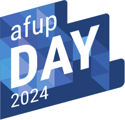

Meetup AFUP
Juin 2024
- Association créée en 2001 pour promouvoir PHP et son écosystème
- Organise des conférences (Forum PHP, AFUP Day)
- environ 15 antennes dans toute la France
- afup.org/association/antennes
- Meetup tous les mois ⏰
- Du PHP et son environnement
- Et avec des apéros ! 🍻
Nous aider ?
- Speakers ! ⚠️
- Locaux
- Sponsoring (manger && boire)
Prochaines dates
- 09/07/2024, Jolicode
- /09/2024, Mobiskill ?
- /10/2024, OpenClassrooms ?
- /11/2024, Wizards technology ?
Meetup parisiens
- Software Crafters Paris / OWASP Paris : lundi 17 juin, chez Octo Technology
- React Paris Meetup : mardi 18 juin, chez In The Memory
- Scrum Life x Reacteev : mardi 18 juin, chez Reacteev (Booster vos équipes avec l'IA)
- MariaDB : mercredi 19 juin, chez Centreon
- PyLadies : jeudi 20 juin, chez Too Good To Go
- ParisJS : pas encore annoncé (jeudi 26)
Élection de l'antenne
- Thomas Dutrion
- Axel Venet
- Amélie Le Coz
- Fabien Salles
- Julien Mercier-Rojas
- Guillaume Miranda
- Christophe Villeneuve
Actu AFUP

Baromètre des salaires
Lancé en avance cette année !
AFUP Day 2024

- 10 et 11 octobre 2024
- Disneyland Paris
AFUP Day 2024
- CFP en cours
- 3 tracks
Actu PHP

RFC
array_find et array_find_key acceptée pour 8.4
"New ext-dom features in PHP 8.4" et support d'HTML5 (en vote jusqu'au 24)
Aujourd'hui !
- Le lazy-loading d'objets en PHP et dans Symfony : un concept avancé et transparent par Nicolas Grekas
- sOlid : Fermer une classe pour réduire la complexité par Timothée Garnaud
Et pour finir
Hébergé et apéro offerts par Eleven Labs
Merci à eux !
Bon meetup !